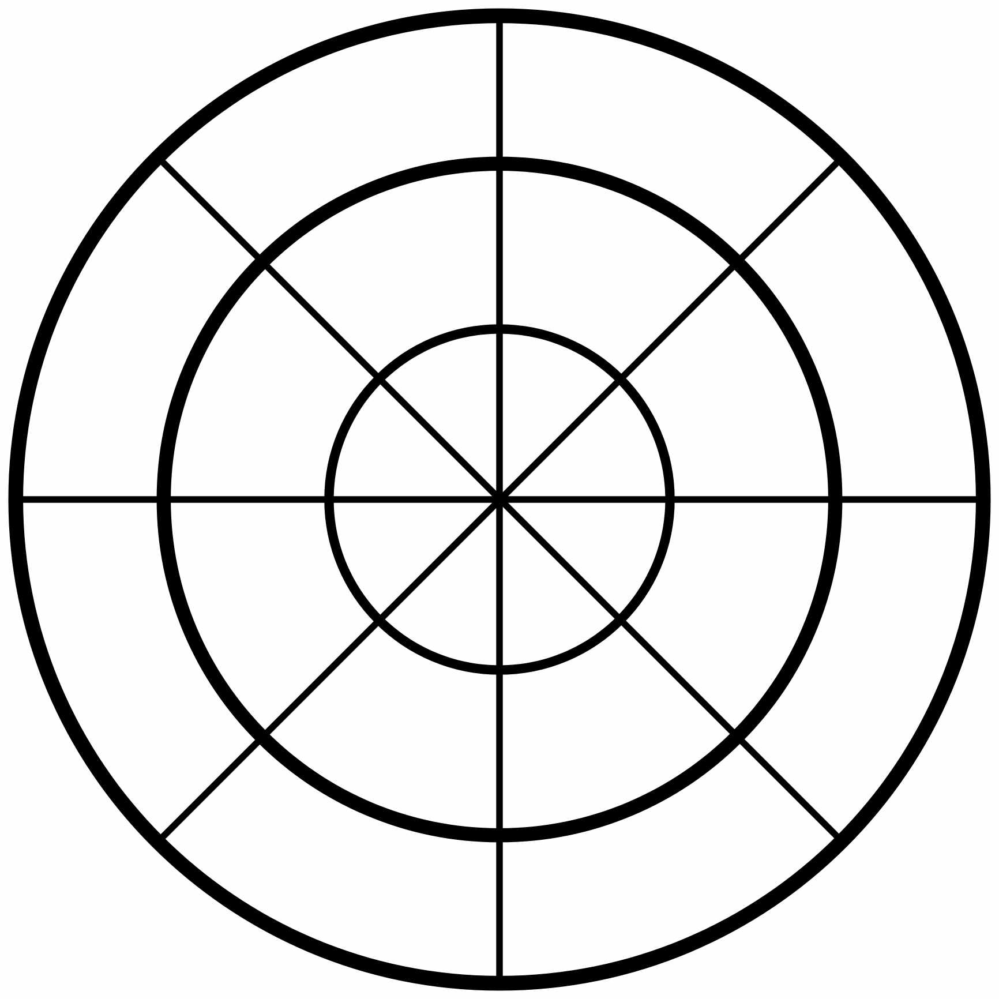

Activity 3 - August 8, 2024

In this activity, we delved into a thought-provoking exercise by utilizing
a segment wheel to gain valuable perspectives from our family and friends,
allowing us to understand how our loved ones perceive us and providing us
br
with a different lens through which to reflect on our character and actions.